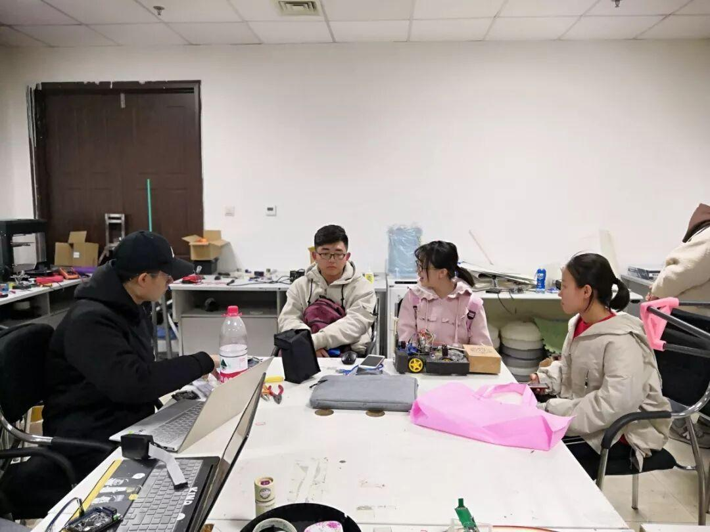
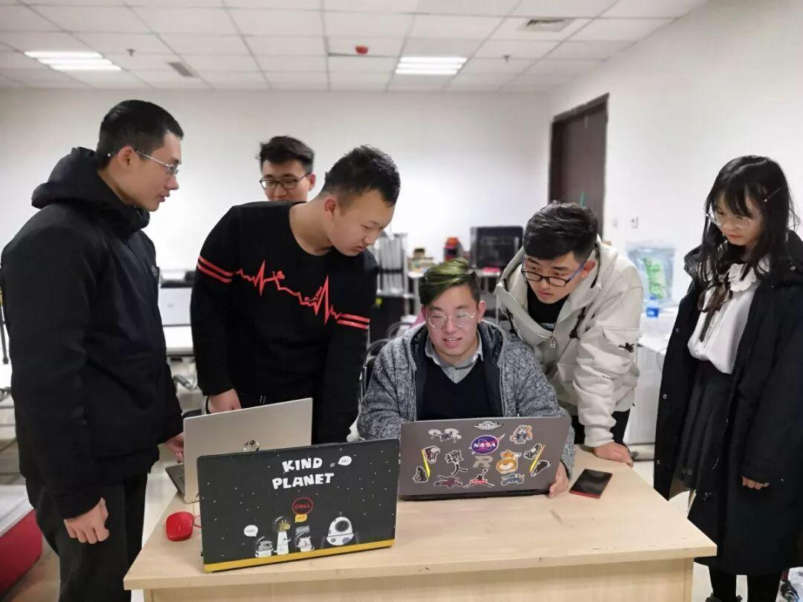

开学啦！！！

又是一年3月时，又是一年开学季
告别了白雪皑皑的冬天，迎来了万物复苏的春天
我们又一次齐聚在电子技术与应用协会

那么，下学期我们将在
技术部招新
技术部要进行招新了，要进行几场充满智慧与紧张的答辩。假期时的辛苦制作，到了检验成果的时候。技术部的小哥哥、小姐姐们，努力吧，文体210期待你们的到来( •͈ᴗ⁃͈)ᓂ- - -♡


礼物设计大赛
是不是还有许多人对上一次的小车对抗赛中过瘾刺激的比赛，辛苦努力的创作念念不忘，也许你没有拿到理想的成绩，又或许因为种种原因没能参加上一次的比赛，不过，
不用遗憾
礼物设计大赛正等待你的加入，天马行空，奇思妙想，尽情发挥你的想象！加油！
大赛的准备
六月的礼物设计大赛收尾工作结束之后，就要开始准备电赛和省赛了，又是无数个不眠的夜，虽然熬夜易秃头，但是为了心爱的机器人和比赛，我们仍然坚持，让我们一起努力吧，为了自己所爱，翻山越岭，终将收获自己的梦想！！！
好啦，社团事务汇报就到这里了，我们来说点题外话，新学期你有什么远大（遥不可及）的目标呢？欢迎评论哦，会有帅气小哥哥、漂亮小姐姐翻牌子的呦(｡･ω･｡)ﾉ♡
编辑：秦艳霞、李亭熹
图片：信息部、网络


沈理电子技术与应用协会
有趣的灵魂在等你长按扫码可关注